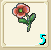

| Rank |
名称 |
画像 |
場所 |
| 台湾名 |
| 木材 |
| 1 |
バルサ |
|
ファンブルグを東から出て近くの木周辺 |
| 印度輕木 |
| 2 |
モミ |
|
ファンブルグを西から出て(447.164) |
| 樅 |
| 3 |
イエローメランチ |
|
ウィルノア洞窟付近の(500.300) |
| 黄月木 |
| 3 |
ぐみの木 |
|
蓋雷布倫森林(187,43)
|
| 茱萸木 |
| 4 |
ツガ |
|
アリュート付近の(640.72)、ウィルノアの(407,425) |
| 鐵衫 |
| 5 |
ヒバ |
|
ウィルノアの(351.416)付近 |
| 琵琶木 |
| 6 |
アカマツ |
|
ウィルノアの南の(400.550)付近 |
| 赤松 |
| 7 |
ホオノキ |
|
ジェノーバの西の(201.458)付近 |
| 朴 |
| 8 |
スギ |
|
ジェノーバの西の(161.354)付近 |
| 杉 |
| マジカルキャロット |
|
魔術大学(34.165)付近 |
| 魔法紅蘿蔔 |
| シングロール |
|
ミネガル島(233.426)付近 |
| 單木 |
| 9 |
ヒノキ |
|
魔術大学の西の森、セレーネ(105.158)付近 |
| 絲柏 |
| 10 |
トネリコ |
|
アルバネス東の森(231.147)付近 |
| ? |
| ハーブ（香草） |
| 1 |
アップルミント |
|
ファンブルグを西から出て北にある花畑 |
| 蘋果薄荷 |
| 2 |
レモングラス |
|
ファンブルグを西から出て北にある花畑 |
| 檸檬草 |
| 3 |
アイリス |
|
ファンブルグを西から出て北にある花畑 |
| 蝴蝶花 |
| 4 |
カリン |
|
ファンブルグを西から出て北にある花畑 |
| 果梨 |
| 5 |
コケモモ |
|
ファンブルグを西から出て北にある花畑 |
| 桃木 |
| 5 |
フローズンアイリス |
|
セレーネ(109.170) |
| 冰凍愛麗絲 |
| 6 |
サフラン |
|
ファンブルグを西から出て北にある花畑 |
| 番紅花 |
| 7 |
タイム |
|
ジェノーバの南の花畑(175.497)付近 |
| 百里香 |
| 8 |
ナデシコ |
 |
ジェノーバの南の花畑(262.574)付近 |
| 瞿麥 |
| クイニ |
|
クルクス島(508.508)付近 |
| 香草 |
| 9 |
フェンネル |
|
ジェノーバ東門から出て、ティナへの橋を渡った北(283.371)付近 |
| 茴香 |
| 10 |
マロニエ |
|
ジェノーバ東の橋を渡って南東の川べりの花畑のあたり一帯(329.455) |
| 七葉樹 |